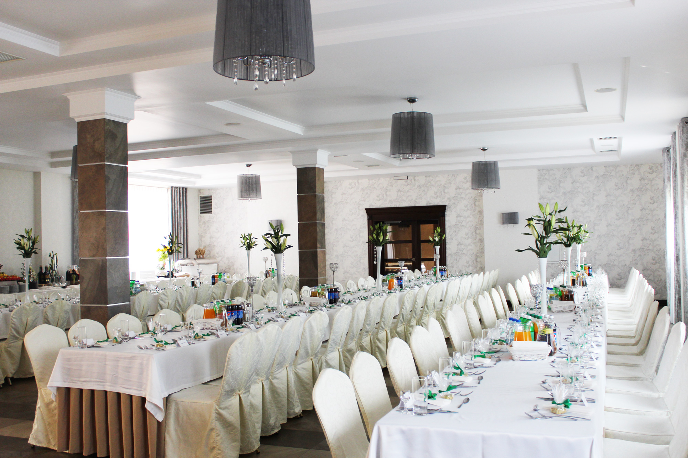
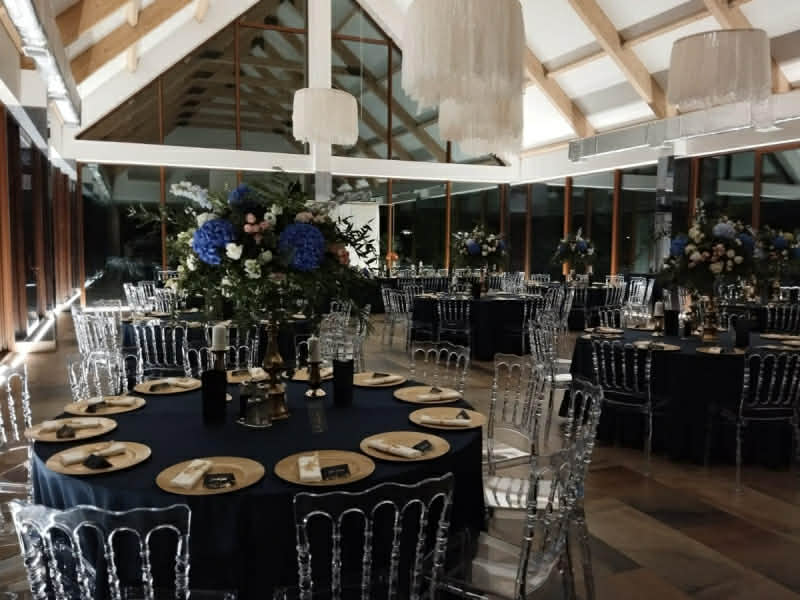

Przyjęcie Weselne

Hotel Kmicic
Adres: Zemborzyce Dolne 62, 20-515 Lublin
Godzina: 17:00
Telefon: +48 81 756 60 00
Parking: Bezpłatny, przestronny parking dla wszystkich gości
Nocleg: Komfortowe pokoje hotelowe - rezerwacja przez Młodą Parę
Hotel Kmicic to elegancki obiekt położony w sercu Zemborzyc, zaledwie 10 minut jazdy od kościoła. Oferuje przestronną, klimatyczną salę weselną, wyśmienitą kuchnię oraz profesjonalną obsługę. Otoczony zielenią i jeziorem, zapewnia wyjątkową atmosferę na niezapomniane przyjęcie!
Strona hotelu Zobacz na mapie
